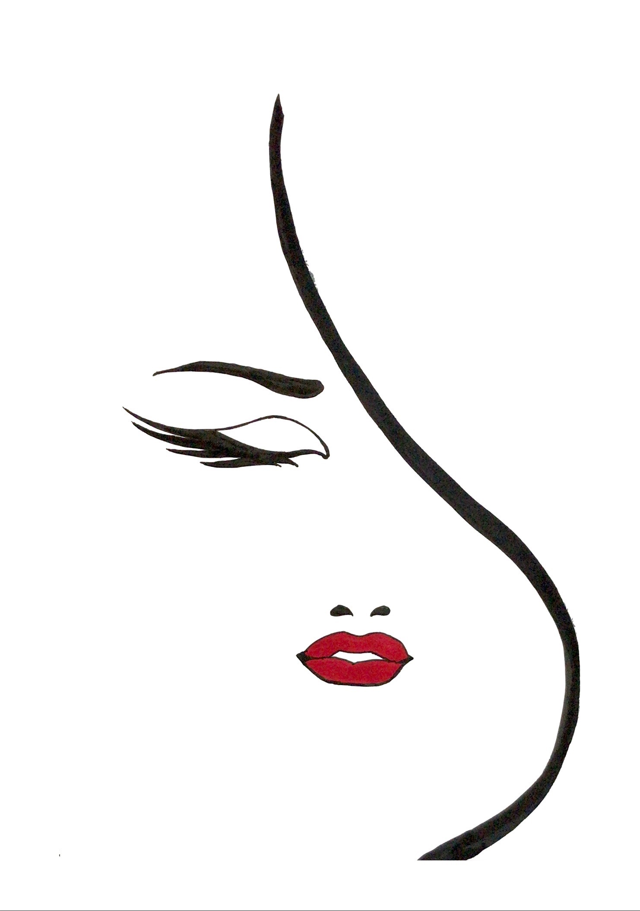
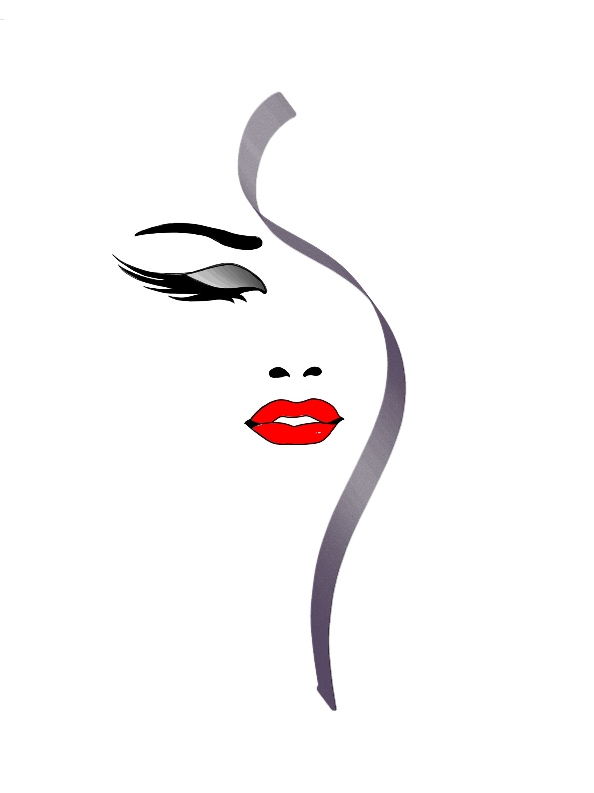

Arte – Kunst & Kreativität
Hier findest du künstlerische Werke, visuelle Experimente und visuelle Ausdrucksformen von Lucianino.



Hier findest du künstlerische Werke, visuelle Experimente und visuelle Ausdrucksformen von Lucianino.